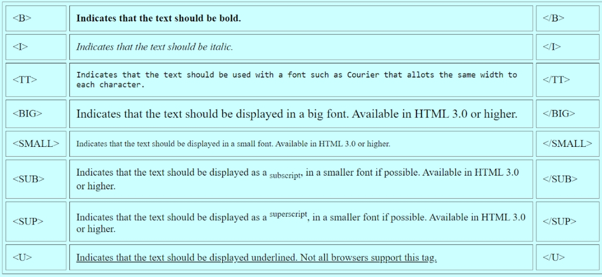
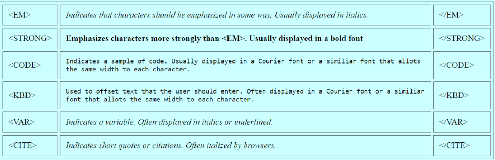

HTML Formatting is a process of formatting text to have better look and feel. HTML provides the ability to format text without using CSS. There are many formatting tags in HTML and these tags are used to make text bold, italicized, or underlined. In HTML the formatting tags are divided into two categories:
Physical Tags are used in HTML to provide actual physical formatting to the text. Following are the Physical tags commonly used in HTML.
Logical tags are designed to describe (to the browser) the enclosed text's meaning.
